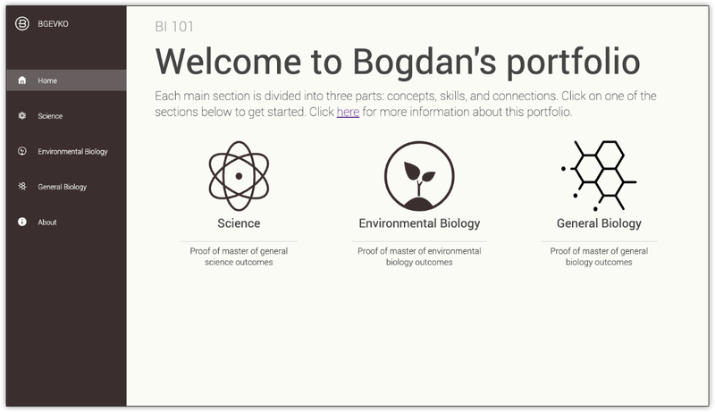
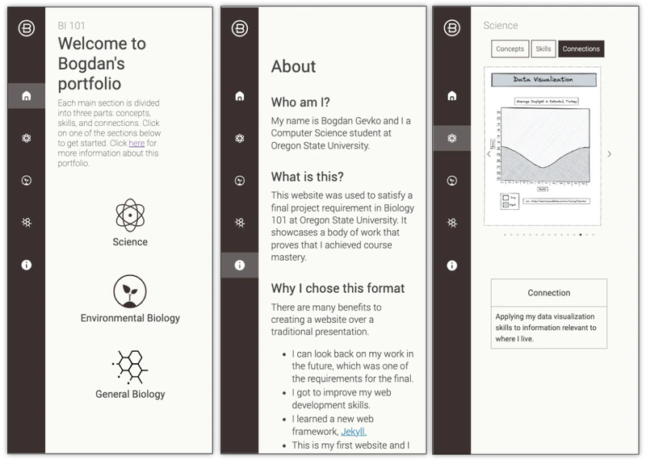
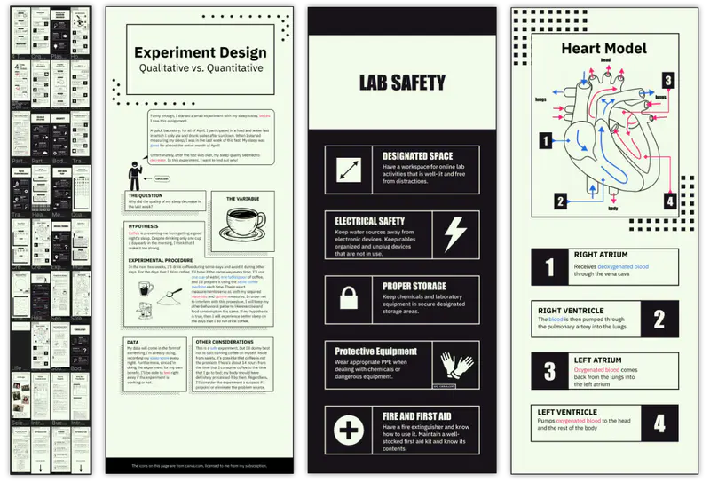
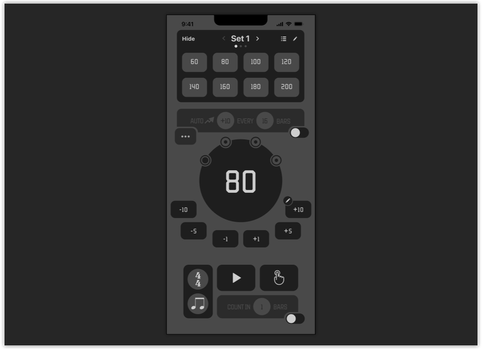
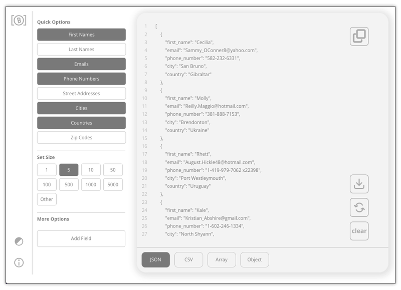
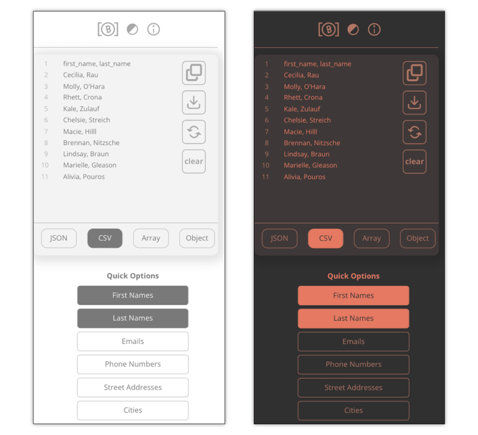
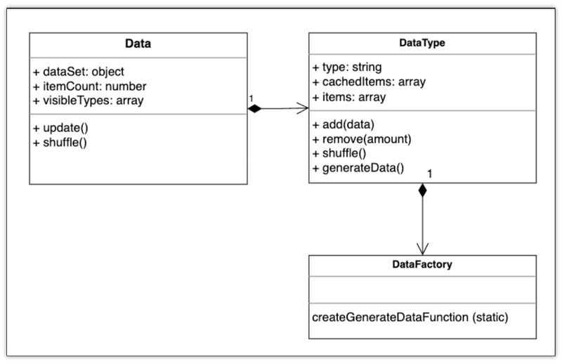
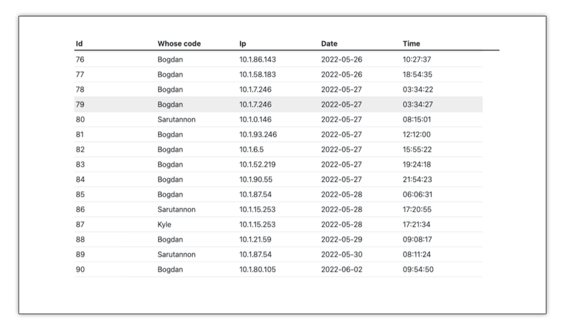
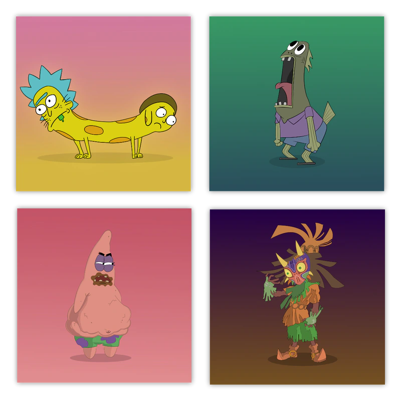
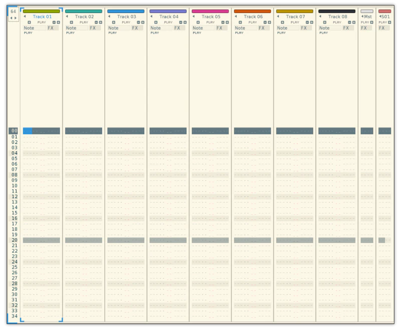

I created this static website to host an assignment for a biology class. I used Figma to make the initial design and implemented it using the Jekyll framework. I deployed it using GitHub pages.

I ensured the website worked on mobile using reactive design.

I designed a cohesive interface for my Anatomy notes in Figma to create a seamless scrolling experience. The image on the left are all the pages I created and the subsequent images are random samples to showcase the design.

I designed a user interface for an iOS metronome app in Figma

I designed an open-source random data generator web tool (www.randomdatagen.com) using React. The interface updates dynamically in real-time, and the tool is blazing fast because it doesn't need to make any external requests; all data logic is handled by frontend JavaScript.

I made the interface responsive and also implemented a dark mode.

I used a variation of an Object Oriented Programming (OOP) design pattern known as Factory when implementing the data logic. I documented the implementation for future reference.

I created a minimal QR code tracker for a group project using Flask and deployed it to Heroku. The tracker would update when the group's QR codes were scanned, providing real-world data we presented in our final presentation.

I created these vector drawings using Affinity Designer.

This is a screenshot of Renoise, a digital audio workstation. I'm currently creating a tool using the Lua scripting language and Renoise API to provide quality-of-life improvements for the program, such as expanded edit operations and more intuitive navigation.